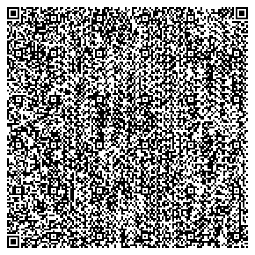
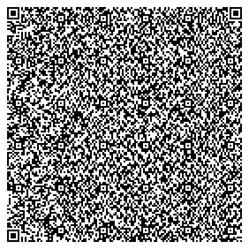
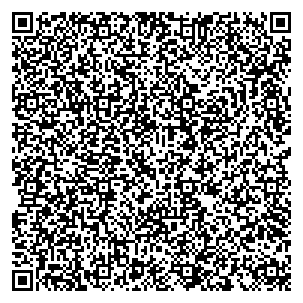
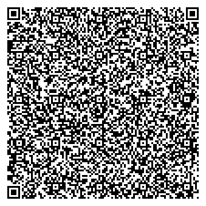

In July 2025 I ran a rough experiment to determine whether or not it is practical to store a record of a game of Go on a single QR code. This is a summary of the results.
We start with a game record [1] in the standard SGF format[2]. It records a game of 256 moves and contains some basic information about the game, such as player names, the date, the result, and the name of the event. There are no variations and no commentary; a file with substantial commentary or variations would likely be too large for any QR code to store, and would need to be cut down to the bare original moves. This sgf file has a size of 1708 bytes, and the QR code [3] that encodes it is enormous:
Despite its unwieldy size, this QR code has some advantages. Since it directly represents the universal and text-based SGF format, no special software is required to use it. If we want a smaller QR code which still directly encodes SGF, we can strip the .sgf file before encoding by removing all the line breaks and additional game information. This leaves us with the smallest .sgf file [4] that records all the moves of the game, weighing in at 1538 bytes. The QR code encoding it is still huge, but slightly less so than that of the unmodified file:
If we want a much smaller QR code, we need to shrink the data beyond what is possible in the SGF file format. Simply compressing the original file with gzip [5] yields a file size of 725 bytes, and a much smaller code:
Compressing the stripped file [6] reduces it to 557 bytes, which can be stored on a fairly reasonably sized QR code:
More complex software is now needed to decompress the data back into SGF text. Since the data is now binary instead of text, a fair deal of portability and compatibility is lost. This can be remedied by converting the binary data to base64 text before encoding it into a QR code, at a cost to size. The compressed original file encoded in base64 [7] takes up 981 bytes:
The stripped compressed base64 file [8] is 754 bytes:
Of course, if we have no need for commentary or variations, there are more efficient ways to store game records than compressed SGF text. There are 361 points on a 19x19 board, so each move could comfortably fit in 9 bits. Assuming an additional 100 bytes of overhead, a 256-move game could fit in 388 bytes. Converting this to base64 with 37% overhead, the data grows to 532 bytes, still less than the stripped and compressed SGF file. Even an unreasonably long game of 500 moves, stored in this way in base64, could fit in 908 bytes, smaller than the original compressed SGF file in base64.
It seems that storing a Go game in a single QR code is completely reasonable, were the necessary software to be written. This would be useful for instant sharing of game records among people in the same room. For example, after recording your game, you could immediately share the record with your opponent. In public game review sessions, the record for the game being reviewed could instantly be shared with the whole room. It could also be used to share problems such as tsumego. A tsumego problem, even with many variations, would almost certainly have fewer moves than a full game. QR codes could also be printed in books, such as books of puzzles.
back [2]: SGF (Smart Game Format): Wikipedia, Official Specification
back [3]: generated by Kentaro Fukuchi's qrencode (github)
back [4]: See #3 in Files. I presume this results in the smallest possible .sgf file that records all the game's moves, but I have no actual proof.